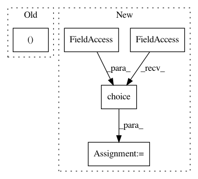

2957144417620c5f24282051414ec44201c827a9,batchflow/sampler.py,HistoSampler,sample,#HistoSampler#Any#,500
Before Change
np.ndarray
array of shape (size, histo dimension).
return sample_histodd((self.bins, self.edges), size, self.state)
def update(self, points):
Update bins of sampler"s histogram by throwing in additional points.
After Change
array of shape (size, histo dimension).
// Choose bins to use according to non-zero probabilities
bin_nums = np.random.choice(self.nonzero_probs_idx, p=self.nonzero_probs, size=size)
// uniformly generate samples from selected boxes
low, high = self.l_all[bin_nums], self.h_all[bin_nums]
return self.state_sampler(low=low, high=high)
def update(self, points):
Update bins of sampler"s histogram by throwing in additional points.
In pattern: SUPERPATTERN
Frequency: 4
Non-data size: 5
Instances
Project Name: analysiscenter/batchflow
Commit Name: 2957144417620c5f24282051414ec44201c827a9
Time: 2020-03-04
Author: Tsimfer.SA@gazprom-neft.ru
File Name: batchflow/sampler.py
Class Name: HistoSampler
Method Name: sample
Project Name: analysiscenter/batchflow
Commit Name: cff08af33167150ec2e0717db391c7b8af49de22
Time: 2020-04-07
Author: nikita_007_94@mail.ru
File Name: batchflow/sampler.py
Class Name: HistoSampler
Method Name: sample
Project Name: theislab/scanpy
Commit Name: cd93c5446a236ed76456b188579e671d0619f333
Time: 2017-07-21
Author: f.alex.wolf@gmx.de
File Name: scanpy/preprocessing/simple.py
Class Name:
Method Name: subsample
Project Name: SpiNNakerManchester/sPyNNaker
Commit Name: 070003f70129fd8dd88364df6d2ae64c1d2a35f8
Time: 2017-11-24
Author: andrew.gait@manchester.ac.uk
File Name: spynnaker/pyNN/models/neural_projections/connectors/fixed_number_post_connector.py
Class Name: FixedNumberPostConnector
Method Name: _get_post_neurons